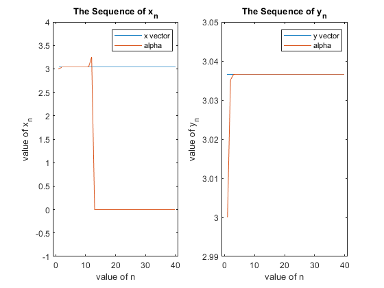
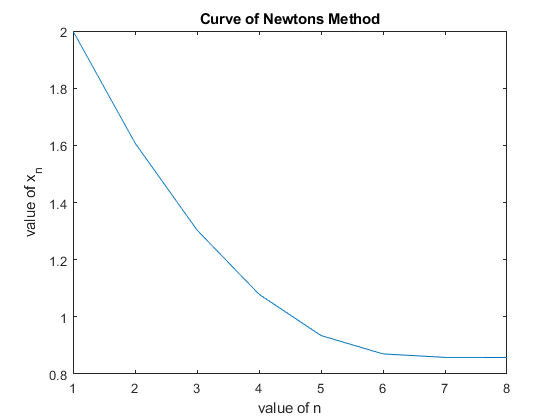

x = zeros(1,40);
xn = 3;
n=1;
while n~= 41
x(1,n) = xn;
xn = 5^n *sqrt(4*(2- sqrt(4-(xn/5^n)^2)));
n = n+1;
end
fprintf("1.i) the vector x is \n")
fprintf('%1.4f ',x)
naxis = (1:40);
constant = ones(1,40)*3.0366;
subplot(1,2,1)
plot(naxis,constant,naxis,x),axis([-1,41,-1,4]), legend('x vector','alpha'),xlabel('value of n'),ylabel('value of x_n'), title('The Sequence of x_n')
y = zeros(1,40);
yn = 3;
n = 1;
while n ~= 41
y(1,n) = yn;
yn = (4*yn)/(sqrt(4*(2+ sqrt(4-(yn/5^n)^2))));
n = n+1;
end
fprintf("\n\n1.v) the vector y is \n")
fprintf('%1.4f ',y)
naxis = (1:40);
constant = ones(1,40)*3.0366;
subplot(1,2,2)
plot(naxis,constant,naxis,y),axis([-1,41,2.99,3.05]), legend('y vector','alpha'),xlabel('value of n'),ylabel('value of y_n'),title('The Sequence of y_n')
xn = 2;
n = 0;
test = true;
x = zeros(1);
while test == true
xn2 = (16*xn^5 + 1)/(20*xn^4 - 1);
n = n+1;
x(1,n)=xn;
xn = xn2;
if ((xn - xn2)^2) < 10^(-20)
if ((4*xn2^5 - xn2 -1)^2) < 10^(-20)
test = false;
end
end
if n == 1000
test = false;
end
end
fprintf("\n\n2.a)the final value of x is ")
fprintf('%f \n',x(1,n))
figure(2)
naxis = (1:n);
plot(naxis,x),xlabel('value of n'),ylabel('value of x_n'),title("Curve of Newtons Method")
1.i) the vector x is
3.0000 3.0352 3.0366 3.0366 3.0366 3.0366 3.0366 3.0366 3.0366 3.0369 3.0385 3.2539 0.0000 0.0000 0.0000 0.0000 0.0000 0.0000 0.0000 0.0000 0.0000 0.0000 0.0000 0.0000 0.0000 0.0000 0.0000 0.0000 0.0000 0.0000 0.0000 0.0000 0.0000 0.0000 0.0000 0.0000 0.0000 0.0000 0.0000 0.0000
1.v) the vector y is
3.0000 3.0352 3.0366 3.0366 3.0366 3.0366 3.0366 3.0366 3.0366 3.0366 3.0366 3.0366 3.0366 3.0366 3.0366 3.0366 3.0366 3.0366 3.0366 3.0366 3.0366 3.0366 3.0366 3.0366 3.0366 3.0366 3.0366 3.0366 3.0366 3.0366 3.0366 3.0366 3.0366 3.0366 3.0366 3.0366 3.0366 3.0366 3.0366 3.0366
2.a)the final value of x is 0.857804
 